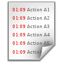

|  | My weekend plan |
Planning is the first and most important function of management. It is needed at every level of management. In the absence of planning all the business activities of the organisation will become meaningless. The importance of planning has increased all the more in view of the increasing size of organisations and their complexities.
Saturday
|
Sunday
|
Make sure your pet has plenty of fresh water during hot weather